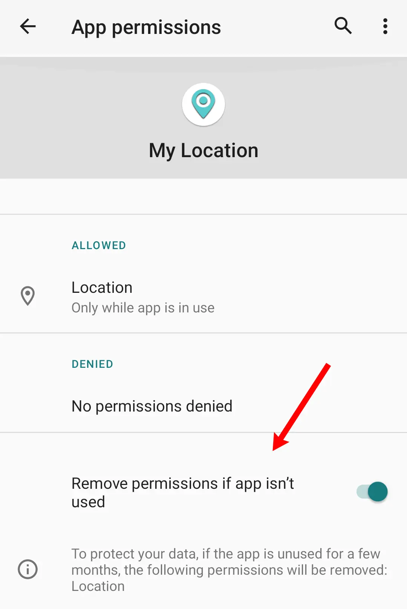

أسئلة PMX المتكررة
لماذا أحتاج إلى استخدام PMX؟¶
لأن:
- يوفر PMX جميع المعلومات المتفرقة (أو غير المتاحة) المتصلة بالأذونات المعلومات و التحكم على شاشة واحدة بحيث يمكنك مشاهدتها والتحكم فيها بطريقة شاملة وملائمة.
- لا توجد أداة رسمية متاحة في المخزن أندرويد لتغيير AppOps. فقط مجموعة فرعية من أذونات manifest معرضة للمستخدم في إعدادات الأذونات. PMX يكشف جميع الأذونات في شكل خام. ذات الصلة: Manifest الأذونات و AppOps.
- PMX يجعل من السهل عليك تتبع أي تغييرات غير مرغوب فيها إلى الأذونات.
- يتيح لك PMX التحكم على جهازك حفظ موارد الجهاز مثل البطارية وعرض النطاق الترددي للشبكة، و حماية خصوصيتك. أنت لست متروك بالكامل لرحمة التطبيق والمطورين ROM. اقرأ هذا article للحصول على فكرة.
- PMX يمكنه مراقبة تغييرات الأذونات في الوقت الحقيقي، وعودتها تلقائيًا عند التوقف عن استخدام التطبيق. أو يمكنه إجراء مسح مجدول من الأذونات. لذا لا يتوجب عليك أن تتذكر الأشياء.
- PMX يجعل من السهل لك النسخ الاحتياطي واستعادة الأذونات حالة التطبيقات المثبتة حتى لا تضطر إلى تعديل أذونات التطبيق مرة تلو الأخرى.
يرجى أيضا الاطلاع على ما هو PMX؟
لماذا يتطلب PMX وصولاً إلى الجذر أو ADB ؟¶
يقوم أندرويد عن عمد بتقييد التطبيقات من تعديل أذونات التطبيقات الأخرى manifest أو AppOps (وفي كثير من الحالات من تغيير بعض منها الخاص). وتحمي ضمانات المنصة هذه خصوصية المستعملين وسلامتهم للنظام.
لتنفيذ الإجراءات التي تتطلب امتيازات مرتفعة، يستخدم PMX مساعداً صغيراً ومتميزاً منفصلاً بدلاً من محاولة فعل كل شيء من عملية التطبيق العادية. بشكل افتراضي أن المساعد يعمل تحت ADB UID (2000) عند بدء تشغيله عبر ADB، أو تحت اسم UID النظام (1000) على الأجهزة ذات الجذر. إذا كان لديك جهاز جذر ، فيمكنك تغيير معرف المستخدم الخاص بالمساعد في إعدادات متقدمة.
جهازي غير متجذر. كيف يمكنني استخدام PMX؟¶
استخدم PMX مع ADB. يرجى قراءة الملاحظة في البداية. وقد تكون هناك بعض القيود على بعض الأجهزة.
لماذا لا يعمل PMX أو يعمل بشكل صحيح على أحدث أندرويد؟¶
PMX يعتمد على واجهات برمجة التطبيقات المخفية في Android أو واجهات غير SDK غير موثقة (على Android Developers) على عكس واجهات برمجة التطبيقات القياسية. إذاً مع كل إصدار جديد للأندرويد، يجب أن نمر عبر رمز مصدر Android لمعرفة أي واجهات برمجة التطبيقات التي كسرت (تغيرت أو أزيل).
كما أن إصلاح واجهات برمجة التطبيقات المعطلة يستغرق وقتًا طويلاً؛ أحيانًا أسابيع، وأحيانًا شهورًا. وليس مضمونا أننا سنكون دائما قادرين على إصلاح API المكسورة. في بعض الأحيان، تعمد Google جعل استمرار استخدامنا للواجهات البرمجية للتطبيقات (APIs) المخفية أمراً صعباً أو مستحيلاً.
لذلك ليس من الممكن لنا أن نجعل PMX يعمل على الفور على كل إصدار جديد من أندرويد (خاصة في مرحلة بيتا) طالما أن رمز المصدر النهائي AOSP لم يتم نشره علنا (على البحث في التعليمات البرمجية أو مستودع Git Reposy).
نسخة أندرويد الأخيرة المدعومة من PMXمذكورة في وصف التطبيق على GitHub و Play Store. عند تشغيل التطبيق على إصدار غير مدعوم لأول مرة، يظهر تحذيرا كهذا:

لماذا لا يعمل PMX بشكل صحيح على أنظمة تشغيل OEM أو ROMs المخصصة؟¶
PMX يعتمد على واجهات برمجة التطبيقات المخفية في Android أو واجهات غير SDK غير موثقة (على Android Developers) على عكس واجهات برمجة التطبيقات القياسية. لذا نحن بحاجة إلى الوصول إلى شفرة المصدر الخاصة بك ROM لمعرفة بالضبط كيف تعمل واجهات برمجة التطبيقات المخفية.
حسناً، AOSP (الذي تطوره جوجل) مفتوح المصدر. ولكن إذا قام مطورك OEM أو ROM بإدخال بعض التغييرات على AOSP لغرض التخصيص، ليس لدينا طريقة لمعرفة ما هي التغييرات التي أدخلوها على رمز AOSP المخزن. نحن عاجزون عن العمل هنا. وهذه الحقيقة مذكورة في وصف التطبيق على GitHub و Play Store. عذراً.
كيف يغير PMX أذونات التطبيقات الأخرى؟¶
PMX نفسه لا يمكن ولا يمكن منح أو إلغاء أذونات التطبيقات الأخرى. في الواقع لا يوجد تطبيق طرف ثالث مميز للقيام بذلك. هو نظام تشغيل Android الذي يتحكم في أذونات التطبيقات. PMX يرسل فقط طلبًا إلى إطار عمل Android لتغيير حالة الإذن. الآن يتوقف الأمر كليا على أندرويد إلى أي مدى يلبي طلبنا. ليست كل الأذونات قابلة للتغيير. وإذا لم تتمكن من تغيير حالة الصلاحية باستخدام PMX، لن تتمكن من تغييرها بأي طريقة أخرى أيضا.
هل تبقى الأذونات متغيرة بعد إيقاف تشغيل ADB ، أو تم رفض الجذر، أو تم إلغاء تثبيت PMX؟¶
PMX نفسه لا يمكن ولا يمكن منح أو إلغاء أذونات التطبيقات الأخرى. في الواقع لا يوجد تطبيق طرف ثالث مميز للقيام بذلك. هو نظام تشغيل Android الذي يتحكم في أذونات التطبيقات. PMX يرسل فقط طلبًا إلى إطار عمل Android لتغيير حالة الإذن.
لذلك بمجرد تغيير الإذن، لن يكون هناك فرق إذا قمت بإلغاء تثبيت PMX أو إسقاط امتيازاته. يبقى الإذن في أي حالة كانت، ما لم يتم تغييره مرة أخرى من قبلك أو من قبل نظام التشغيل.
لماذا لا يمكنني تغيير أذونات XYZ؟¶
أذونات البيان مع مستوى الحماية الخطير فقط (و بضعة أخرى) قابلة للتغيير. AppOps لا تعتمد على بعض العوامل الأخرى AppOp قابلة للتغيير. هكذا يعمل أندرويد، لا يمكننا تغيير السلوك. انظر Manifest الأذونات و AppOps.
بالإضافة إلى ذلك، يحمي PMX بعض التطبيقات والأذونات الإطارية الحرجة؛ وقد يؤدي تغييرها إلى طوب الجهاز. انظر السؤال ذي الصلة.
انظر أيضا لماذا لا يمكن تغيير بعض AppOps ؟
لاحظ أنه بدءًا من Android 15، لا يمكن إلغاء أذونات manifest لتطبيقات النظام ذات مستوى الحماية Development. أندرويد يتجاهل الطلب بصمت.
لقد غيرت إذنًا لكن ذلك لا يعمل. لماذا؟¶
بعد تغيير الإذن بنجاح، إذا لم تحصل على النتائج المطلوبة، أي إنها تعود مباشرة أو بعد بضع ساعات أو أيام، إنه نظام تشغيل أندرويد ليلقى عليه اللوم. رجاءً أرا:
عند استخدام التطبيقات، قد يغير أندرويد أذوناته. ولسوء الطالع، ليس لدينا طريقة لمنع هذا. مراقب الأذونات و المدقق المجدول قد يساعد في هذا الصدد.
لماذا لا يمكن تغيير بعض AppOps؟¶
في بعض الأحيان تظهر عبارة "AppOp mode not changed" (لم يتم تغيير وضع الترجمة). وهذا يعني أن أندرويد رفض طلب تغيير الوضع AppOp. لا يمكنك تغييرها بغض النظر عن الطريقة أو التطبيق الذي تستخدمه. ويمكن أن تكون هناك أسباب محتملة متعددة.
-
يعتمد بعض AppOps على أذونات manifest المقابلة. لذلك لا يمكن تغييرها بشكل مستقل. على سبيل المثال، قد لا تكون قادراً على رفض
READ_CONTACTSAppOp إذا تم منح الإذنandroid.permission.READ_CONTACTSmanifest.أيضًا إذا لم يطلب التطبيق الإذن manifest في ملفه manifest ، لا يمكن أيضا منح الإذن AppOp. ولكن قد تظهر في قائمة إذن التطبيق إذا حاول التطبيق استخدامها (وتم رفضها).
SYSTEM_ALERT_WINDOWهو أحد هذه الأمثلة. -
بعض AppOps يستخدم فقط من قبل أندرويد للتوافق (على سبيل المثال
LEGACY_STORAGE) ولا يتحكم في أي شيء. إذا استكشفنا عملهم الأساسي فإنه يكشف أن منح/إلغاء هذه الأذونات لا معنى لها. -
لا يمكن تغيير بعض الأذونات إذا كان التطبيق قيد التشغيل أو يستهدف إصدار أندرويد قديم أو أحدث.
-
بعض OEM ROMs تصرف غريب عندما يتعلق الأمر بـ AppOps. انظر لماذا لا يعمل PMX بشكل صحيح على أنظمة تشغيل OEM أو ROMs?
-
يمكن أن يحتوي العديد من AppOps على وضوعين: وضع الحزمة ووضع UID. من الممكن أن يتغير أحدهما بينما الآخر لا يمكن أن يكون كذلك.
عادة ما يكون UID AppOps له الأسبقية على حزمة AppOp نظرائه. في هذه الحالة، الوضع الفعال للحزمة AppOp هو نفس الوضع الخاص ب UID AppOps الخاص بها. لذلك لا يمكنك تغيير الحزمة AppOp وحدها.
بعض AppOps يفضل أن يتم تعيينه في وضع الحزمة، وليس وضع UID. لكن إذا تم تعيينه خطأ في وضع UID (مع أداة الأوامر أو بواسطة تطبيق آخر)، فإنه يصبح غير مستجيب لأي تغييرات. قم بإعادة تعيين AppOpsمن القائمة اليمنى العليا لجعلها تعمل مرة أخرى. هذه هي الحالة أيضا مع AppOps الأخرى التي لديها إذن مناظر من manifest مع AppOp مستوى الحماية.
في الواقع هناك المزيد من التفسيرات إذا قمنا بحفر كل تطبيق وإذن فردي (والذي لا يبدو عملياً). كما ذكر أعلاه، لا يغير PMX أذونات التطبيقات الأخرى بمفرده. حتى لو كان لسبب غير معروف لا يغير أندرويد إذن, أو يعيدها على الفور، لا يوجد شيء يمكننا فعله لإجباره لأن هذه هي القيود في نهاية اندرويد. بدلاً من ذلك، يجب أن أقول هذه هي الطريقة التي يعمل بها أندرويد.
ذات الصلة:
لماذا لا أرى تطبيق XYZ في قائمة الحزم؟¶
الرجاء التحقق من مرشحات الاستبعاد. يتم استبعاد جميع حزم Android القياسية تقريبًا بشكل افتراضي. يمكنك استبعاد / إدراج أي حزمة تريدها من / إلى قائمة مرئية.
لماذا لا أرى إذن XYZ في حزمة ABC ؟¶
الرجاء التحقق من مرشحات الاستبعاد. الأذونات التي لا يمكن تغييرها مستبعدة من القائمة المرئية الافتراضية.
لماذا لا أرى XYZ AppOp في حزمة ABC ؟¶
الرجاء التحقق من مرشحات الاستبعاد إذا كان XYZ AppOp مستبعداً من القائمة المرئية. أو قد لا تستخدم حزمة ABC عملية XYZ. لست بحاجة إلى أن تكون قلقا حيال هذا.
ولكن إذا كنت ترغب في رؤية XYZ AppOp لجميع التطبيقات، انتقل إلى مرشحات الاستبعاد → Extra AppOps، لم تستبعد و تحقق من XYZ AppOp في القائمة.
على سبيل المثال، كتابة _CLIPBOARD في مربع البحث (مع البحث العميق المربع) وستحصل على جميع التطبيقات التي استخدمت (أو حاولت استخدام) READ_CLIPBOARD أو أذونات WRITE_CLIPBOARD. الطوابع الزمنية معروضة أيضا (ولكن ليس لجميع AppOps).
لذا إذا كان التطبيق الذي تهتم به ليس في نتائج البحث، تحقق من كل من AppOps في قائمة مرشحات الاستبعاد المذكورة أعلاه.
ما الذي يجب أن أختره لمعرف دايمون المميز في الإعدادات المتقدمة؟ النظام أو ADB؟¶
لا يهم إلا إذا كنت تستخدم الجذر، أو adbd على جهازك يعمل مع الجذر (وهذا ليس هو الحال مع أجهزة المستخدم النهائية).
يفضل استخدام النظام (UID 1000) لأنه يسمح بامتيازات أكثر من ADB (UID 2000). على سبيل المثال. تغيير أذونات "System-Fixed" ممكن فقط عند تشغيل النظام.
ما هي "الأذونات غير صالحة" في فلاتر الاستبعاد؟¶
إذا كان التطبيق يطلب إذن manifest ولكنه غير معلن (توفر) من خلال إطار أندرويد أو أي من الحزم المثبتة، إنه إذن غير صالح. على سبيل المثال، com.android.vending.BILLING هو إذن غير صالح إذا لم يتم تثبيت تطبيق Play Store على جهازك.
ما هي "إضافية" AppOpsفي فلاتر الاستبعاد؟¶
ليس كل AppOps يستخدم لجميع التطبيقات المثبتة. ولكن يمكنك فرض AppOp على أي تطبيق. تظهر إضافية AppOps المحددة في قوائم أذونات جميع التطبيقات حتى تتمكن من تعيينها.
ما هي أنماط AppOp المختلفة وأيها يجب علي استخدامه؟¶
عادة يجب عليك السماح أو تجاهله. أو قد ترغب في السماح بالعملية فقط عندما يكون التطبيق في Foreground (فقط على Android 9 وما فوق). رفض هو النسخة المكثفة من تجاهل والتي قد تؤدي إلى تعطل التطبيق الطالب. الافتراضي هو السلوك الافتراضي للنظام الذي يختلف عن AppOps المختلفة.
يرجى ملاحظة أنه لا يمكن تعيين كل وضع AppOp على كل AppOp لكل تطبيق. على سبيل المثال في إصدارات الأندرويد الأخيرة يسمح لـ CAMERA و MICROPHONE باستخدام تطبيقات المستخدم فقط في المقدمة (حتى إذا كان وضع التعيين مسموح). وبالمثل، لا يمكن أبدًا ضبط بعض AppOps على وضع Foreground.
متصل: لماذا لا يمكن تغيير بعض AppOps ؟
الوثائق الرسمية: AppOpsManager.
ما الفرق بين وضعي "تجاهل" و"رفض" AppOp؟¶
Ignore فشل صامتا بينما Deny يعيد خطأ إلى التطبيق الذي قد لا يتوقعه التطبيق وقد يتعطل. يجب أن تستخدم عادة التجاهل.
لماذا لا يمكنني تعيين وضع AppOp إلى المقدمة؟¶
لا يمكن ضبط وضع المقدمة لجميع AppOps. وحتى عندما يتم تحديده فإنه قد لا يعطي نتائج متوقعة.
ذات الصلة:
يرجى ملاحظة أن وضع الإذن "السماح فقط أثناء استخدام التطبيق" لا يقوم دائماً بتعيين وضع AppOp إلى "Foreground":

عادة ما نرى ولايتين فقط للحصول على إذن manifest : تم منحه وإلغائه. لكن أندرويد يستخدم flags لتقسيم هاتين الولايتين إلى العديد من الولايات الفرعية. لبعض الأذونات يتم استخدام نفس الظاهرة لتحقيق سلوك "منح فقط عندما يكون التطبيق مرئي". لا يستخدم الإذن AppOp في هذه الحالة.
لمزيد من التفاصيل، راجع الوثائق الرسمية الخاصة بـ الوصول في الخلفية والوصول في المقدمة.
من أجل البساطة، لا يشاهد PMX أعلام الإذن في الوقت الراهن. ولكن في المستقبل يمكن إضافة خيار لتتبع التغييرات إلى أعلام الأذونات حتى لو بقي الوضع الممنوح / الملغاة دون تغيير.
ما هي وظيفة إذن WAKE_LOCK ؟¶
تقوم التطبيقات بتشغيل قفل الإيقاظ للحفاظ على الجهاز مستيقظ، أي عدم إدخال وضع الإزاحة.
كيف يمكنني تغيير أذونات INTERNET؟¶
لا يسمح أندرويد بتغيير جميع الأذونات، مثل تلك التي تحتوي على عادية مستوى الحماية (e. . INTERNET) أو أولئك الذين لديهم مستوى حماية ثابت أو التوقيع (عادة النظام أو تطبيقات الإطار). انظر Manifest الأذونات و AppOps.
ولكن إذا كان لديك جذر، Fyrypt يمنحك سيطرة قوية جدا على نشاط الشبكة الذي يحدث على جهازك.
ما هي الصلاحيات الثابتة؟¶
يتم منح أذونات ثابت النظام للتطبيقات المثبتة مسبقاً من قبل مطوري OEMS أو ROM. وليس المقصود منها أن تتغير. ولكن إذا كان جهازك متجذرا، يمكن لـ PMX تغيير أذونات النظام الثابتة.
يتم منح (أو رفض) أذونات السياسة الثابتة من قبل مشرفي تكنولوجيا المعلومات على الأجهزة المدارة. ولا يمكن تغييرها.
يتم تثبيت أذونات المستخدم الثابتة من قبل المستخدم. إذا رفض المستخدم الإذن عدة مرات عندما يطلب التطبيق ذلك، نظام التشغيل يشير إلى الإذن كمستخدم ثابت ولا يظهر أي طلبات أخرى للمستخدم لمنح الإذن إذا طلب التطبيق نفس الإذن مرة أخرى. يمكن تغيير هذا النوع من الأذونات الثابتة بسهولة كلما يريد المستخدم.
كيف يمكنني تغيير أذونات النظام الثابتة أو أذونات التوقيع/الامتيازات أو أذونات تطبيقات إطار العمل؟¶
إذا كان جهازك متجرد، في الإصدار المدفوع يمكنك السماح للتغييرات الحرجة في الإعدادات المتقدمة لإجراء تغييرات على الأذونات مع علم إصلاح النظام، مستوى الحماية التوقيع أو الامتياز، أو تلك الخاصة بالتطبيق الإطاري. لكن ليس من المستحسن أن تلعب مع تطبيقات النظام والإطار. يمكنك طوب جهازك.
ما هو "وضع UID" في أذونات AppOp؟¶
إنه وضع للإذن AppOp الذي يشير إلى أن تغيير هذا AppOp سيؤثر أيضًا على تطبيقات أخرى (مع نفس UID)، إذا تم تثبيته. انظر sharedUserId.
لاحظ أن وضع UID له الأسبقية على وضع الحزمة لكثير من AppOps.
هل يمكنني التحكم في ميزة أندرويد "إزالة أذونات إذا لم يستخدم التطبيق" من PMX؟¶
نعم. هذه الميزة متوفرة منذ Android 11. كما أنه يُسمى "إيقاف نشاط التطبيق إذا لم يتم استخدامه" في بعض الأجهزة.

لتغيير هذا الخيار من PMX:
- انتقل إلى مرشحات الاستبعاد → قائمة إضافية AppOps و تحقق من
AUTO_REVOKE_PERMISSIONS_IF_UNUSED. - العودة على الشاشة الرئيسية، اكتب
AUTO_REVOKE_PERMISSIONS_IF_UNUSEDفي شريط البحث العلوي. تأكد من تمكين البحث العميق في إعدادات البحث. - عيّن الوضع السماح أو التجاهل لأي تطبيق تريده.
يمكنك أيضا استخدام عرض الإذن أو عمليات الدفعة بدلا من الخطوة 2 و 3. إليك دليل كيفية القيام بذلك باستخدام عمليات الدفعات:
لماذا تظهر لي الكثير من النوافذ المنبثقة "Bad ROM"؟¶
يقوم OEMS بتغييرات ضخمة في رمز AOSP (والذي تقوم بتطويره جوجل). لذا فإن إطار العمل AppOps على بعض المخصصات / OEM ROMs يعود بنتائج غير متوقعة لا يمكن أن يفهمها PMX. يمكنك تجاهل هذه النوافذ المنبثقة، لكنها تعني أن الوظيفة محدودة بعض الشيء.
يمكنك إيقاف تشغيل هذه النوافذ المنبثقة في الإعدادات → الإعدادات العامة → تعطيل النوافذ السيئة ROM.
انظر لماذا لا يعمل PMX بشكل صحيح على أنظمة تشغيل OEM أو ROMs?
ما الذي تفعله أزرار "إخفاء من القائمة" (عند الضغط لمدة طويلة)؟¶
كل منهما يخفي التطبيق أو الإذن من القائمة المرئية. إذا كنت لا تريد تغيير إذن لأي تطبيق، يمكنك إخفائه. ولن يظهر لأي تطبيق. لفك الإخفاء، انتقل مرة أخرى إلى إعدادات مرشحات الاستبعاد.
وبالمثل، يمكنك استبعاد تطبيق من القائمة المرئية إذا كنت لا تشعر بالقلق إزاء أذوناته.


هل هناك قائمة كاملة بجميع الأذونات متاحة مع الشرح؟¶
لا توجد قائمة كاملة من الأذونات مع الوصف، على الأقل في معرفتي. PMX تُظهر النسخة الاحترافية وصفًا موجزًا للأذونات الشائعة manifest و AppOp .
هناك مصادر طرف ثالث مثل هذه بواسطة Izzy. أندرويد موقع المطور الرسمي و مصدر التعليمة البرمجية هي أيضا مصادر جيدة للتعلم.
مع كل إصدار جديد من أندرويد يتم إضافة بعض الأذونات الجديدة، وبعضها أيضا يصبح عتيقا. كما أنه ليس هناك حاجة إلى أن يقوم كل مستخدم برعاية جميع الأذونات.
كيفية استخدام التطبيق في الملف الشخصي للعمل / بيئة تعدد المستخدمين؟¶
النسخة الاحترافية تدعم ملفات تعريف العمل ومستخدمين متعددين. حدد مستخدم من القائمة المنسدلة.

كيف يقارن PMX بـ XPrivacyLua؟ هل يمكن أن يحل أحدهما محل الآخر؟¶
PMX ليس مصمماً ليحل محل بل ليكمل المشاريع مثل XPrivacyLua. لديهم أهداف تصميم مختلفة.
XPrivacyLua يخترق الوظائف القياسية لنظام Android عن طريق ربطه بواجهات برمجة التطبيقات الداخلية، باستخدام Xposed الذي يستبدل بعض مكتبات Android بمكتبات مخترقة. لذلك نحصل على وظيفة إضافية مثل تغذية البيانات المزيفة للتطبيقات والحصول على إشعار بالأحداث ذات الصلة بالإذن التي لا يمكننا أن نعرف عنها بأي وسيلة عادية أخرى.
PMX من ناحية أخرى ليس مستهدفاً أن يكون وحدة إطارية. يوفر الوصول المريح إلى بعض واجهات برمجة التطبيقات المتميزة التي لا يمكن للتطبيقات العادية استخدامها. إنها لا تخترق وظائف الأندرويد القياسية بأي وسيلة. يمكن أيضا تنفيذ معظم المهام PMX من القيادة، باستثناء القليل منها مثل تغيير أذونات النظام الثابتة.
التجذير و Xposed هما شرطان صارمان لاستخدام XPrivacyLua. PMX لا يتطلب أيا من كليهما لمعظم الجهات. وكلاهما غير متاح للعديد من الأجهزة أو أن العديد من المستعملين لا يعتبرونه خياراً بسبب الصعوبات التقنية التي ينطوي عليها الأمر. ضمان الفراغ، و SafetyNet فشلت و مسائل أخرى.
هل يمكن أن يقوم PMX بإزالة الأذونات تلقائياً عند إغلاق التطبيق، كما تفعل Bouncer؟¶
نعم. انظر مراقب الأذونات و Scheduled Check. لكنه لا يستخدم ميزة الوصول إلى الأندرويد لأداء النقرات / النقرات على الشاشة نيابة عن المستخدم (رغم أنها ميزة جيدة دون الحاجة إلى أي إعداد إضافي). PMX يعتمد على امتيازات الجذر أو ADB. لذا فإنه يمكن أن يفعل أكثر (انظر ما هو PMX?) مما يمكن فعله باستخدام ميزات إمكانية الوصول.
إذا كنت تستخدم ADB، وليس الجذر، فإن مراقب الأذونات قد لا يعمل على بعض الأجهزة. يرجى الاطلاع على حدود ADB.
هل يمكنني الحصول على إشعار عندما يتم تثبيت تطبيق جديد؟¶
نعم. انظر مراقب الأذونات.
منذ أندرويد 8 من غير الممكن للتطبيقات الخلفية (غير العاملة) الحصول على إشعار بحدث تثبيت التطبيق الجديد. لذا فقد قمنا بتشغيل خدمة أمامية (مع إشعار مستمر) لاستلام هذا الحدث. أو قد تفكر في استخدام التحقق المجدول للحفاظ على الأمور في مكانها.
عند تثبيت تطبيق جديد، هل يمكن لـ PMX إلغاء أذوناته بشكل افتراضي؟¶
نعم. ولكن لا توجد أذونات يمكن حذفها. تم إلغاء جميع أذونات manifest القابلة للإلغاء بالفعل والبقاء ملغاة ما لم يمنحها المستخدم صراحة. فيما يتعلق بـ AppOps ، الكثير منها لا يظهر حتى مرة واحدة على الأقل من قبل التطبيق مثل VIBRATE و READ_CLIPBOARD. العديد من الآخرين (على سبيل المثال READ_CONTACTS) لديهم أذونات manifest المقابلة التي تم إسقاطها بالفعل، كما أشير إلى ذلك. لذلك لا يمكن التنبؤ به وقت تثبيت التطبيق الذي يجب إزالته AppOps.
ولكن يتم عرض إشعار عند تثبيت تطبيق جديد (إذا استخدم مراقب الأذونات) حتى يتمكن المستخدم من تعيين أذونات واحدة تلو الأخرى أو تطبيق ملف تعريف.
لماذا يحتاج تطبيق PMX إلى إذن الإنترنت؟¶
يتطلب إصدار برو المستقل الاتصال بالإنترنت للتحقق من الترخيص. أخرى versions يمكن أن تعمل دون اتصال تمامًا. على الرغم من أن تطبيق Play Store يحتاج إلى اتصال بالإنترنت للتحقق من الترخيص.
الاستخدام الاختياري للإذن android.permission.INTERNET¶
- التحقق من وجود تحديثات التطبيق. يمكنك تعطيل هذا في إعدادات التطبيق.
الاستخدام المحلي (على الجهاز) للإذن android.permission.INTERNET¶
لا يسمح أندرويد للتطبيقات بإنشاء مقابس شبكة بدون الحصول على إذن INTERNET حتى لو كان المقصود استخدامها فقط محليا وليس للاتصال بالإنترنت. PMX لديه إستخدامان للاتصال المحلي (على الجهاز) (القدرة على إنشاء مقابس localhost في 127.0.0.1) للاتصال الداخلي (IPC):
- PMX يبدأ عملية في الخلفية بامتيازات الجذر / ADB ويتواصل مع تلك العملية عبر مقبس الشبكة. بعد المصافحة اليدوية الأولية، تبدأ كلتا العمليتين في التحدث عبر الباندر. ليس لدينا طريقة أفضل للقيام بذلك لأن أندرويد لا يسمح للتطبيقات بالتحدث عبر مقابس نطاقات UNIX أيضا.
- إذا لم يكن جهازك متجذراً و استخدم PMX مع ADB، فإن الاتصال بـ
adbdيتطلب أذونات الإنترنت. انظر هل يقوم موقع PMX بالتجسس عليّ باستخدام ADB عبر الشبكة؟
إذا لم يتمكن التطبيق من إنشاء أو استخدام مقابس الشبكة المحلية، فسيفشل. وإذا كنت ترغب في إيقاف PMX من استخدام الإنترنت، يجب أن لا يوقف التطبيق من التحدث إلى العمليات على الجهاز عبر واجهة التراجع لـ IPC. هذه هي الحالة عادة مع جدران الحماية المستندة إلى iptablesمثل Fyrypt وجدران الحماية المستندة إلى VPN مثل NetGuard. لكن بعض ROMs لديه ميزة مدمجة لمنع الوصول إلى الشبكة:

وهذا لا يمنع التطبيق من استخدام الإنترنت فحسب، بل يعطل أيضا قدرته على إنشاء مناظر لحلقة الارتداد لIPC. لذلك PMX لن يتمكن من الحصول على امتيازات الجذر / ADB إذا تم رفض هذا الإذن.
كم هو صديق للخصوصية PMX؟ هل تجمع بيانات المستخدمين؟¶
لا. نحن لا نجمع بياناتك. أبداً. حتى بايت واحد PMX لديه إصدار مفتوح المصدر. نحن نؤمن بأن مستخدمينا يتم تعليمهم وإطلاعهم جيدا على سبب استخدامهم PMX. نحن نحترم خصوصيتك، لذلك لا يتم جمع أي بيانات على الإطلاق، حتى سجلات الأعطال. قد ترغب أيضا في رؤية سياسة الخصوصية.
هل يقوم موقع PMX بالتجسس عليّ باستخدام ADB عبر الشبكة؟¶
لا.
PMX يتحدث إلى عملية adbd عبر اللغة المحلية المضيف (127.0.0.1). ولكن لا توجد طريقة لبدء الاستماع ل adbd على اللغة المحلية فقط، وليس على واجهات الشبكة الأخرى (لأن المقصود أن يستخدم ADB خارجيا من جهاز كمبيوتر شخصي). يمكنك بالتأكيد إيقاف الاستماع adbd من عناوين IP الخارجية، إذا استطعت. سيظل PMX يعمل، دون الكشف عن أي منفذ خارجي.
يمكنك أيضا تغيير منفذ 5555 إلى أي رقم تريده في إعدادات متقدمة. إنه ليس مبرمجًا بشكل ثابت.
أيضًا ADB منذ أندرويد 4.2 من المفترض أن يكون محميًا بواسطة مصادقة مفتاح RSA (واحدة من أقوى آلية المصادقة). لذلك، حتى لو كان الجهاز متاحًا عبر الإنترنت (وهو أمر غير محتمل)، لا يمكن لأحد إجراء اتصال ADB دون مصادقة.
يمكنك التحقق من هذه الادعاءات بأي طريقة تريدها. نحن هنا لمساعدتكم تقنيا.
هل يقوم PMX بإساءة استخدام امتيازات الجذر لجمع بياناتي؟¶
ونحن نؤمن بـ مبدأ أقل الامتياز. لكن بسبب الطبيعة المقيدة لنظام تشغيل أندرويد، لا يمكن لـ PMX أن يعمل دون أن يكون لديه امتيازات عالية. ما يمكننا أن نقدمه هو، إذا كنت شخصا محترفا في التكنولوجيا يمكننا أن نعلمكم كيف نجعل من الصعب على التطبيقات إجراء اتصالات بالإنترنت، حتى مع امتيازات الجذر.
أعتقد أن PMX عديم الفائدة. لماذا تم إنشاؤها؟¶
ونحن نحترم رأيكم. PMX ليس للجميع (ولهذا السبب لم يتم صقله وإصداره للجمهور لسنوات لأننا كنا نعلم أن جمهورنا صغير جدًا). انه فقط لبعض الناس ذوي الخبرة التقنية والذين يهتمون بالخصوصية و التحكم في أجهزتهم. غالبية مستخدمي الهاتف هم فقط في أيدي مستخدمي برمجيات التشغيل ومطوري التطبيقات. إنهم ليسوا على علم بما يتم القيام به لهم و بياناتهم. وتفضل الأغلبية الراحة على الخصوصية. و هذا جيد.